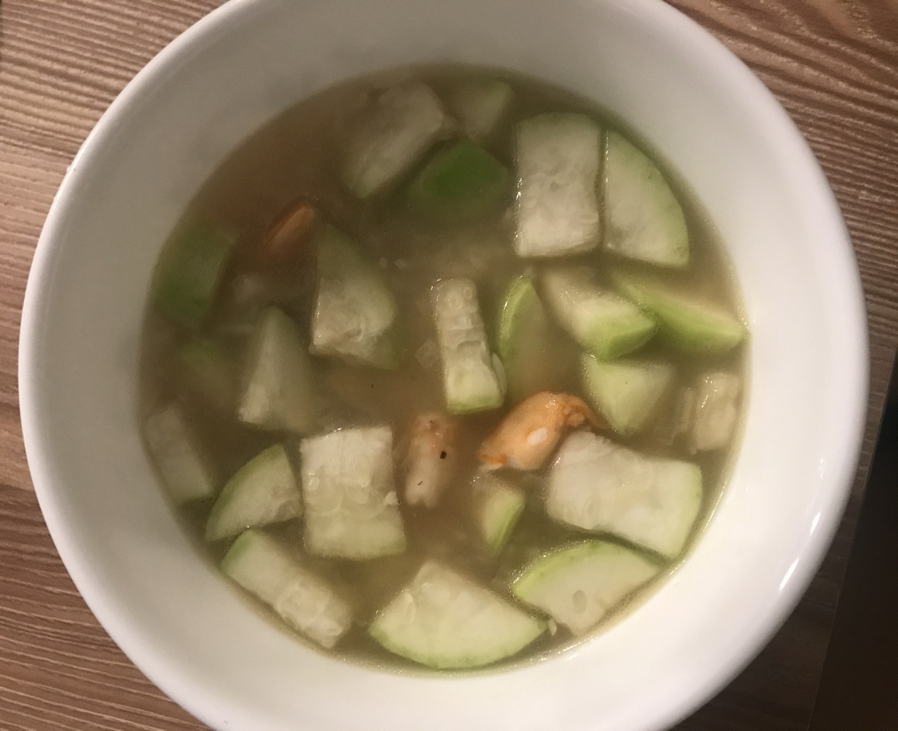

| Other | Meat | Veggie | Fruit |
|---|---|---|---|
| chicken broth | pork rib tips | cilantro | |
| fish sauce | shrimp | green onions | |
| mushroom seasoning | opo squash | ||
| pepper | shallot | ||
| salt |
| instructions |
|---|
| Season meat with salt, pepper, and shallots |
| Season cubed squash with salt and pepper |
| Saute minced shallots until slightly golden |
| Stir in meat and squash |
| Add water/broth, adjust to taste with various seasonings |
| Simmer for 5-10 min |
| In last few minutes, add green onions and cilantro |